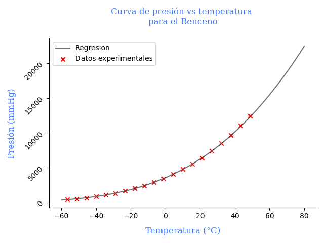

Constantes de Antoine para el Benceno
Los datos de presión de vapor del Benceno a diferentes temperaturas estan dadas en la siguiente tabla. Determine las correspondientes constantes de Antoine.
T e m p e r a t u r a ( ° C ) P r e s i o ˊ n ( m m H g ) T e m p e r a t u r a ( ° C ) P r e s i o ˊ n ( m m H g ) − 56.67 381.14 − 51.11 502.67 − 45.56 651.61 − 40.0 837.78 − 34.44 1049.81 − 28.89 1313.56 − 23.33 1623.85 − 17.78 1975.51 − 12.22 2378.89 − 6.67 2870.18 − 1.11 3428.70 4.44 4033.76 10.00 4747.43 15.56 5537.67 21.11 6412.65 26.67 7384.89 32.22 8481.25 37.78 9670.69 43.33 11015.28 48.89 12411.58 \begin{array}{c|c|c|c} Temperatura(°C) & Presión(mmHg) & Temperatura(°C) & Presión(mmHg)\\ \hline -56.67 & 381.14 & -51.11 & 502.67\\ -45.56 & 651.61& -40.0 & 837.78\\ -34.44 & 1049.81& -28.89 & 1313.56\\ -23.33 & 1623.85& -17.78 & 1975.51\\ -12.22 & 2378.89& -6.67 & 2870.18 \\ -1.11 & 3428.70 & 4.44 & 4033.76 \\ 10.00 & 4747.43 & 15.56 & 5537.67 \\ 21.11 & 6412.65 & 26.67 & 7384.89 \\ 32.22 & 8481.25 & 37.78 & 9670.69 \\ 43.33 & 11015.28 & 48.89 & 12411.58 \\
\end{array}
T e m p e r a t u r a ( ° C ) − 5 6 . 6 7 − 4 5 . 5 6 − 3 4 . 4 4 − 2 3 . 3 3 − 1 2 . 2 2 − 1 . 1 1 1 0 . 0 0 2 1 . 1 1 3 2 . 2 2 4 3 . 3 3 P r e s i o ˊ n ( m m H g ) 3 8 1 . 1 4 6 5 1 . 6 1 1 0 4 9 . 8 1 1 6 2 3 . 8 5 2 3 7 8 . 8 9 3 4 2 8 . 7 0 4 7 4 7 . 4 3 6 4 1 2 . 6 5 8 4 8 1 . 2 5 1 1 0 1 5 . 2 8 T e m p e r a t u r a ( ° C ) − 5 1 . 1 1 − 4 0 . 0 − 2 8 . 8 9 − 1 7 . 7 8 − 6 . 6 7 4 . 4 4 1 5 . 5 6 2 6 . 6 7 3 7 . 7 8 4 8 . 8 9 P r e s i o ˊ n ( m m H g ) 5 0 2 . 6 7 8 3 7 . 7 8 1 3 1 3 . 5 6 1 9 7 5 . 5 1 2 8 7 0 . 1 8 4 0 3 3 . 7 6 5 5 3 7 . 6 7 7 3 8 4 . 8 9 9 6 7 0 . 6 9 1 2 4 1 1 . 5 8
Fuente: cheegineering
La Ecuación de Antoine tiene la forma:
log 10 P = A − B T + C \log_{10} P = A-\frac{B}{T+C}
log 1 0 P = A − T + C B
Reordenando la ecuación para realizar una regresión multilineal.
T ⋅ log 10 P + C ⋅ log 10 P = A ⋅ T + A ⋅ C − B T \cdot \log_{10}P +C\cdot \log_{10}P =A\cdot T+A\cdot C-B
T ⋅ log 1 0 P + C ⋅ log 1 0 P = A ⋅ T + A ⋅ C − B
log 10 P = A + A ⋅ C − B T − C ⋅ log 10 P T \log_{10}P=A+\frac{A\cdot C-B}{T}-\frac{C\cdot \log_{10}P}{T}
log 1 0 P = A + T A ⋅ C − B − T C ⋅ log 1 0 P
Usando constantes y variables auxiliares.
constantes auxiliares b 0 = A \space \space b_0=A b 0 = A b 1 = A ⋅ C − B \space \space b_1=A\cdot C-B b 1 = A ⋅ C − B b 2 = − C \space \space b_2=-C b 2 = − C
y las variables auxiliares y = log 10 P \space \space y=\log_{10}P y = log 1 0 P x 1 = 1 T \space \space x_1=\frac{1}{T} x 1 = T 1 x 2 = log 10 P T \space \space x_2=\frac{\log_{10}P}{T} x 2 = T l o g 1 0 P
Llegamos a esta ecuación que es una ecuación que usaremos para realizar la refresión multilineal.
y = b 0 + b 1 x 1 + b 2 x 2 y=b_0+b_1 x_1+b_2 x_2
y = b 0 + b 1 x 1 + b 2 x 2
Algo de teoría para regresiones multilineales
Se puede demostrar que las constantes de cualquier regresión multilineal por mínimos cuadrados pueden hallarse a partir de la siguiente relación matricial:
[ N X 1 X 2 ⋮ X k ] × [ N T X 1 T X 2 T ⋯ X k T ] × [ b 0 b 1 b 2 ⋮ b k ] = [ N X 1 X 2 ⋮ X k ] × [ Y T ] ( A ) \begin{bmatrix} N \\ X_1 \\ X_2\\ \vdots \\ X_k \end{bmatrix} \times
\begin{bmatrix} N^T & X_1^T & X_2^T & \cdots & X_k^T \end{bmatrix} \times
\begin{bmatrix} b_0 \\ b_1 \\ b_2 \\ \vdots \\ b_k \end{bmatrix} =
\begin{bmatrix} N \\ X_1 \\ X_2\\ \vdots \\ X_k \end{bmatrix} \times
\begin{bmatrix} Y^T \end{bmatrix}\space\space\space\space\space (A)
⎣ ⎢ ⎢ ⎢ ⎢ ⎢ ⎢ ⎡ N X 1 X 2 ⋮ X k ⎦ ⎥ ⎥ ⎥ ⎥ ⎥ ⎥ ⎤ × [ N T X 1 T X 2 T ⋯ X k T ] × ⎣ ⎢ ⎢ ⎢ ⎢ ⎢ ⎢ ⎡ b 0 b 1 b 2 ⋮ b k ⎦ ⎥ ⎥ ⎥ ⎥ ⎥ ⎥ ⎤ = ⎣ ⎢ ⎢ ⎢ ⎢ ⎢ ⎢ ⎡ N X 1 X 2 ⋮ X k ⎦ ⎥ ⎥ ⎥ ⎥ ⎥ ⎥ ⎤ × [ Y T ] ( A )
Donde: k k k n \space\space n n
La simbología para la transpueta de X X X X T X^T X T X X X X T X^T X T
Los vectores anteriormente mencionados se componen de los datos experimentales que se tiene para realizar la regresión, que tenemos a excepción de N N N
N = ( 1 , 1 , . . . , 1 ) ⏞ n u n o s N = \overbrace {(1, 1, ... , 1)}^ {n \hspace{1em}unos} \
N = ( 1 , 1 , . . . , 1 ) n u n o s
X 1 = ( x 11 , x 12 , . . . , x 1 n ) X_1=(x_{11}, x_{12}, ... , x_{1n})
X 1 = ( x 1 1 , x 1 2 , . . . , x 1 n )
X 2 = ( x 21 , x 22 , . . . , x 2 n ) X_2=(x_{21}, x_{22}, ... , x_{2n})
X 2 = ( x 2 1 , x 2 2 , . . . , x 2 n )
. . . ...
. . .
X k = ( x k 1 , x k 2 , . . . , x k n ) X_k=(x_{k1}, x_{k2}, ... , x_{kn})
X k = ( x k 1 , x k 2 , . . . , x k n )
Y = ( y 1 , y 2 , . . . , y n ) Y=(y_1, y_2, ... , y_n)
Y = ( y 1 , y 2 , . . . , y n )
Simplificando la ecuación ( A ) (A) ( A )
[ N T X 1 T X 2 T ⋯ X k T ] × [ b 0 b 1 b 2 ⋮ b k ] = [ Y T ] \begin{bmatrix} N^T & X_1^T & X_2^T & \cdots & X_k^T \end{bmatrix}\times \begin{bmatrix} b_0 \\ b_1 \\ b_2 \\ \vdots \\ b_k \end{bmatrix}= \begin{bmatrix} Y^T \end{bmatrix}
[ N T X 1 T X 2 T ⋯ X k T ] × ⎣ ⎢ ⎢ ⎢ ⎢ ⎢ ⎢ ⎡ b 0 b 1 b 2 ⋮ b k ⎦ ⎥ ⎥ ⎥ ⎥ ⎥ ⎥ ⎤ = [ Y T ]
[ b 0 b 1 b 2 ⋮ b k ] = [ N T X 1 T X 2 T ⋯ X k T ] − 1 [ Y T ] ( B ) \begin{bmatrix} b_0 \\ b_1 \\ b_2 \\ \vdots \\ b_k \end{bmatrix}
= \begin{bmatrix} N^T & X_1^T & X_2^T & \cdots & X_k^T \end{bmatrix}^{-1} \begin{bmatrix} Y^T \end{bmatrix}
\space\space\space\space\space(B)
⎣ ⎢ ⎢ ⎢ ⎢ ⎢ ⎢ ⎡ b 0 b 1 b 2 ⋮ b k ⎦ ⎥ ⎥ ⎥ ⎥ ⎥ ⎥ ⎤ = [ N T X 1 T X 2 T ⋯ X k T ] − 1 [ Y T ] ( B )
La expresión ( B ) (B) ( B )
Para determinar el grado de correlación podemos usar la siguiente fórmula conocida como el coeficiente de determinación que es muy usado para verifcar el grado de ajuste en regresiones multilineales.
R 2 = ∑ i = 1 n ( y ^ i − y ˉ ) ∑ i = 1 n ( y i − y ˉ ) R^2 =\frac{\displaystyle\sum_{i=1}^{n}(\hat{y}_i-\bar{y})}{\displaystyle\sum_{i=1}^{n}(y_i - \bar{y})}
R 2 = i = 1 ∑ n ( y i − y ˉ ) i = 1 ∑ n ( y ^ i − y ˉ )
Siendo:
y = log 10 P y =\log_{10}P y = log 1 0 P y i y_i y i y ˉ \bar{y} y ˉ y ^ i \hat{y}_i y ^ i x 1 i x_{1i} x 1 i x 2 i x_{2i} x 2 i
Programando la solución con python
Codificando con python tenemos:Para replicar el ejercicio en python puede descargar el archivo de datos del benceno aquí recuerde guardarlo con ‘datos_antoine.csv’ que es el mismo que usamos en el código.
import numpy as npimport csvimport matplotlib. pyplot as plt, T = [ ] , [ ] with open ( "datos_antoine.csv" , "r" ) as f: = csv. DictReader( f) for line in reader: . append( float ( line[ "P" ] . replace( "," , "." ) ) ) . append( float ( line[ "T" ] . replace( "," , "." ) ) ) = np. array( P) = np. array( T) = np. log10( presion) = 1 / temp= y * x1= len ( T) = np. ones( n) = np. array( [ N, x1, x2] ) = np. linalg. pinv( M. T) @ y= b[ 0 ] = - b[ 2 ] = A * C - b[ 1 ] print ( A, B, C) = np. linspace( - 60 , 80 , 100 ) = 10 ** ( A - B / ( data_temp + C) ) = { 'family' : 'serif' , 'color' : 'xkcd:dark red' , 'weight' : 'normal' , 'size' : 12 , } . plot( data_temp, data_pres, "-" , label= "Regresion" , = 'xkcd:dark gray' , alpha= 0.7 , zorder= 2 ) . gca( ) . spines[ 'top' ] . set_visible( False ) . gca( ) . spines[ 'right' ] . set_visible( False ) . scatter( T, P, marker= "x" , color= 'red' , label= "Datos experimentales" ) . xlabel( "Temperatura (°C)" , labelpad = 10 , fontdict= font) . ylabel( "Presión (mmHg)" , labelpad = 10 , fontdict= font) . yticks( rotation= 45 ) . title( "Curva de presión vs temperatura \npara el Benceno" , = font, pad = 20 ) . legend( loc = 2 , fontsize = 10 ) . show( ) Las constante de para el benceno son A = 6.8675, B = 832.2603 °C y C = 250.8452 °C
La gráfica correspondiente es:
